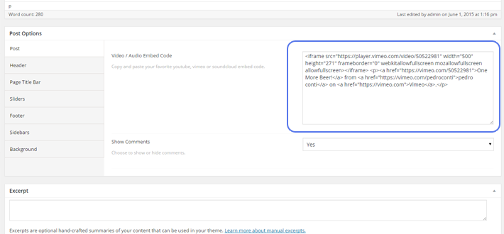

Cumulo Responsive Multi Purpose Wordpress Theme
Introduction
Thank you for purchasing CUMULO Responsive Multi-Purpose Wordpress Theme.
Cumulo is a minimal looking yet feature-rich WordPress theme you can use for any type of website. It is clean, responsive and super flexible. Based on Visual Composer and comes with two premium sliders - Slider Revolutiona and LayerSlider. Cumulo is very scalable and offers hundreds customization options you can use to build your corporate landing pages to small/medium studios and personal pages. Born with 16 unique home demos, more will be added in no time.

You will find lots of useful informations and instructions in this documentation.
If you need more help, please send us an email, Our dedicated support team will help you shortly.
About Us

Hello, We are theme-paradise. We build easy-to-use, beautiful and uniquely hand-crafted Wordpress themes - the themes you love, themes that work. With our themes, you can be truly creative, here is how it happens...
Find more about us on Facebook, Twitter, Themeforest or www.theme-paradise.com
What is Included
- Cumulo Theme
- Cumulo Core Plugin
- Premium Revolution Slider
- Premium Layers Slider
- Premium Visual Composer
- Demo Contents
- Layered PSD design upon request due to large file size
- Lifetime Updates
- 24/7 Support
Please don't forget to rate Cumulo Theme with 5 stars and leave a nice review. Your single word means a lot to us for improvements of products and services
Thank youInstallation
Theme Installation
Once you purchase our item, you will get links to download cumulo.zip file or package.zip file
cumulo.zip file only contains installable wordpress theme ( demo contents included ) and package.zip contains wordpress theme and documentation.
For Installation You will only need cumulo.zip file.
Installing via Wordpress
Follow the steps below to install via wordpress
- Login to your wordpress dashboard
- Go to Appearance > Themes. Click Add new button, located at the top of the screen or Add new theme
- Click on Upload button at the top of the screen.
- Choose
cumulo.zip - Wait until theme upload and install completed and then Click Activate the Theme
- After activation you will have a notice for installing required/recommended plugins
- You must install all Required Plugins one by one or using bulk action.
- You may install recommended plugins as you require. But proper view of demo contents, you must install recommended plugins
Installing via FTP
Follow the steps below to install via FTP
- Unzip
cumulo.zip - Upload cumulo folder to your server in "./wp-contents/themes" from your root folder using FTP clients such as FileZilla, CyberDuck, CuteFTP or etc
- Go to Appearance > Themes. You will find cumulo theme and Click Activate
- After activation you will have a notice for installing required/recommended plugins
- You must install all Required Plugins one by one or using bulk action.
- You may install recommended plugins as you require. But proper view of demo contents, you must install recommended plugins
Update Cumulo
Whenever author update product you will be notified with updates through email. But also you can use "Envato Wordpress Toolkit" plugin for automatic update. You can just click "install automatically" for update theme. Or you can manually download and install theme.
- Login to your wordpress dashboard
- Go to Appearance > Themes. Activate the other theme.
- Select Cumulo and delete. And don't worry about all settings and pages, It will remain same once you reinstall
- Download updated version of Cumulo and Unzip if you have
package.zipand you will findcumulo.zip - Install Cumulo
- No Extra settings will be required except you may need to update related plugins
Import Demo Contents
You can import demo content by using our 1-click demo content importer or manually by uploading XML files using WordPress Importer plugin.
One-click Demo Content Importer
- Login to WordPress Dashboard.
-
Go to Appearance > Demo Content.
-
Click Import Demo Content button. Please wait for a few minutes to importing process be finished.

- After all contents are imported, please set navigation menu.
- Done, yay! You can start building your website by changing demo contents or use some parts for your work.
Manually importing demo content by uploading XML Files
- Login to WordPress Dashboard.
- Check if WordPress Importer plugin is installed and activated. If not, you can install in Plugins > Add New or you can do it in next step.
-
Click Tools > Import, and then click WordPress. If WordPress Importer plugin is not installed, you can see the following dialog to install it.
- Now choose XML files to be imported. You can find some XML files in the downloaded package or in our theme folder(cumulo/inc/demo/). You have bunch of xml files for each posts, pages, slides and more.
- If you've chosen XML file to import, then click Upload File and Import.
-
In next page, you can choose to which author imported demo contents will be assigned. And check Download and import file attachments to import images too. Click Submit.
- Wait for a few minutes till importing process is finished.
Build Your Website.
In this section, We will give you step by step instruction for creating your website using cumulo theme from scratch.
Though Cumulo theme have lots of detailed options, here we will focus on creating your site simply utilizing Cumulo default options and customizing a few,
You can import demo contents for reference.
We assume that you already installed and activated theme and plugins. If not, please go through previous section.
Wordpress Customizer
We are using Wordpress standard customizer for Theme Options and You will see the preview on the right side as you modify options. Theme Options can be overriden by page options for each page, page and portfolios. Preview won't work if you specifically override page options.
Header
You have 5 header styles for header, and you can customize your site by changing styles, logo, and some show/hide settings for header.
First of all you will need to change your logo with your own.
- Go to Appearance > Customize
- Click Header Section and click Logo Panel
- Click Select Image
- Upload your logo and select logo. For retina display, you need to upload your twice bigger logo image with same name followed by @2x. For Example,
Logo.pngandLogo@2x.png - Adjust your logo position by modifying Logo Top Margin
Menu
To create menu, you may need to have some pages, posts or portfolios. Please refer Create Posts, Create Pages, Create Portfolios section to create new pages, posts and portfolios.
To see how to create mega menu please refer Features section below.
- Go to Appearance > Menus
- By Clicking create a new menu link, Create a new menu.
- Add some Items
- Click Save
- Check Main Navigation Menu on Menu Settings / Theme Location or open Manage Locations tab and assign Main Navigation Menu as your new menu
- Go to Appearance > Customize
- Open Header and Menu
- You can show and hide Search Icon and Shopping Cart Icon ( when WooCommerce plugin is installed ) on the menu
Layouts
Customize your layouts by modifying Background Image, Sidebar options.
Typography and Colors
If you go to Appearance > Customize you will have options for customizing typography and colors.
Typography and color settings will affect overall site typographies and colors.
Colors can be overriden by page specific options
Footer
You have 4 footer styles and there are some hidden shortcodes for using same functionalities on different styles. Please follow description on customizer or refer demo contents.
Blogs and Portfolios
You can customize style for blogs and portfolios. You have 3 blog styles: one column, masonry and modern and 2 portfolio styles: grid list and masonry.
Typography and Colors
If you go to Appearance > Customize you will have options for customizing typography and colors.
Typography and color settings will affect overall site typographies and colors.
Colors can be overriden by page specific options
Widgets
- Go to Appearance > Widgets
- You have 6 sidebar areas by default and you can create more by adding on Appearance > Sidebars
- Add your widgets to sidebar area
- Go to Appearance > Customize and Click Sidebar
- Select sidebar you want to show with blog posts and position. These settings can be overriden by page options if set
Create Posts
- Login to WordPress Dashboard.
-
Click Posts > Add New.
-
Select post format.

Now Choose featured media for this post. It can be an image, an audio, a video or quote text based on post format.
For Standard or Image post format, choose featured image.
For Gallery post format, create featured gallery.
For Audio or Video post format, enter video embed link in Post Options. See which embed types WordPress supports.
For Quote post format, enter quote text in post content.
For Link post format, enter link address in post content.
- Enter categories and tags.
- Change any other post option values as you needed.
- Create content using Page builder or enter text or simple html code.
- Click Preview Changes to preview post or click Publish to publish this post.
Create Pages
You can create pages using Visual Composer page builder or enter page content in text editor.
- Login to WordPress Dashboard.
-
Click Pages > Add New.
-
You can use classic editor of WordPress or use visual page builder.

-
If you have activated visual page builder, create layout using rows, columns and shortcodes.
-
Change Page Options values as you like. Page sliders, transparent headers, and page background are all configured here.
- After all done, click Publish to create new page.
Create Portfolio Posts
- Login to WordPress Dashboard.
-
Click Portfolio > Add New.

-
Choose Featured Image for this portfolio post.
- Select portfolio categories, skills and tags.
-
In Portfolio Options, choose Masonry Image Size(this info will be used in portfolio masonry layout), and enter client, budget and demo link (all items are optinal).
- Click Preview Changes to preview portfolio post or click Publish to publish this post.
How To
In this section, you can see some useful tips for building your pages.
Create Transparent Header
- Create a new page or edit existing one.
-
Scroll down to see Page Options. Select Header tab on the left side, then find Transparent Header option.
-
Set it to Yes to enable transparent header for this page.

- Now click Publish or Update to save changes.
Create full-width row in pages
- Create a new page or edit existing one.
-
In page builder, create new row or open Row Settings dialog for existing rows.
-
Change Row Stretch option to anything other than Default. Each of them has different functions.
- Stretch row: stretch row background but leave content in content width.
- Stretch row and content: stretch row background and also content, but there is 15px padding on left and right of row.
- Stretch row and content(no paddings): stretch row background and content, and there is no padding on left and right of row.
-
Click on Save Changes to save settings for this row.
- Make other changes for this page as you need or click Publish/Update to save the page.
Row parallax background
- Create a new page or edit existing one.
-
In page builder, create new row or open Row Settings dialog for existing rows.
-
Change Parallax option to simple or fade. You can use background image of row for parallax, or set separate parallax background image.
- Click on Save Changes to save settings for this row.
- Make other changes for this page as you need or click Publish/Update to save the page.
Select main slider for pages or posts
- Create a new page or edit existing one.
-
Scroll down to see Page Options. Select Slider tab on the left side.
-
Select Slider Type. If you've selected Revolution Slider or Layer Slider, select which slider to use in below Select LayerSlider and Select Revolution Slider options.
-
If you've selected Custom Slider, enter shortcode to display your custom slider.

- Now click Publish or Update to save changes.
Extra Shortcodes
There are some simple shortcodes for use in widgets, but also can be used in posts and pages.
- [cmo_footer_logo][/cmo_footer_logo] : This shortcode will generate logo on footer. Footer Logo file is set on Customizer > Footer > Logo. If not set, Header Log will be displayed
- [cmo_contact_info type="email" icon="fa fa-envelope-o" top="35"]contact@theme-paradise.com[/cmo_contact_info] : This will render contact info with envelope icon and email address with top margin 35px.
- [cmo_contact_info type="email|phone|address"][/cmo_contact_info] : This will render contact info with email address set from Customizer > Footer > Extra Information.
- [cmo_link href="services" target="_blank"]Services[/cmo_link] : This will generate simple link called Services which will be redirected to services page.
- [cmo_footer_social][/cmo_footer_social] : This will output footer social icons. Social Links are from Customizer > Footer > Social Links
- [cmo_typing texts="Deve^500loper|Designer|Entertainer|Lover" delay="1000" loop="true|false"] : This will output typing animation effect. ^500 will wait 500ms while typing and 1000ms will be delayed for next word
Features
Premium Plugins
You will save 71$ by just purchasing Cumulo.
Different Layout and Blog Styles
Wide and boxed layout with multiple views for blogs and portfolios.
Detailed Global Theme Options
Cumulo provides you superbly detailed theme options with live preview. It gives you the infinite possibility to customize every aspect of your dream website.
Specific Page Options
Each page can also be customized differently for your specific purpose. Detailed page options will let you simply override or inherit settings from theme options.
Page Builder With Amazingly Detailed/Easy To Use Shortcodes
Cumulo comes with amazing Visual Composer plugin and provide 40+ amazing shortcodes for building beautiful, feature-rich pages with detailed options.
7 Post Formats for Blogging
Cumulo supports 7 post formats for various blogging needs. Those are Standard, Image, Gallery, Link, Quote, Video and Audio
Mega Menu Functionality
Light yet beautiful mega menu which is able to put background image and different colors is built with Cumulo
Custom Background with Parallax
Easily use images, patterns, colors and youtube/vimeo videos for body and each elements with professional parallax effect.
Stylish Headers and Footers
Cumulo includes 4+ header and footer styles each which allows users easily navigate and find neccessary informations
700+ Google Fonts
Cumulo comes with 700 Google Fonts, you will be able to build your website with tons of font faces.
Unlimited Colors
With cumulo there is no boundry for colors, You can use any color for each element. Once set, it affects globally for consistent user interface and user experiences.
CSS Animations
Cumulo includes beautiful css animations for best animation performance by utilizing browsers core capabilities.
Icon Fonts
Cumulo includes lots of font icons. By using font icons you will see crystal clear icons on retina devices.
Translation Support
Cumulo is translation ready for localization. Build website in your own language by just translating few words.
Custom Style and Javascript
Do have better styles and functionalities and use with cumulo? Don't worry. You have option to add custom styles and scripts without modifying any codes.
Limitless Sidebars and Widgets
You can create as many sidebars as you want and supports beautiful default Wordpress widgets, WooCommerce widgets.
Fully Responsive
Cumulo is absolutely ready for any devices: desktop, laptop, tablet and mobile, No matter they are Apple, Windows, Android.
Retina Ready
Cumulo is ready for retina devices, you just need to provide double size images.
Ready for Popular Free Plugins.
Cumulo is compatible with WooCommerce, BBPress, BuddyPress, Contact Form 7, Really Simple Twitter Feeds, MailPoet Newsletter Subscription, Yith QuickView plugins and more compatibility will be added.
Super Easy Installation and One-Click Demo Import.
Cumulo is super easy to install and step by step guide will lead you to install theme very easily. All demo contents is just one click away and you will have exact clone of demo site in just one button click.
Maximum Compatibility with Web Browsers
Cumulo is compatible with modern browsers, Chrome, Firefox, Safari, IE10+, Edge
Layered PSD included ( get 12$ free )
Original layered PSD files are included in price Just shoot us an email and we will send you the direct link for downloading.
SEO Ready
Cumulo is developed by top authors with standards to optimise for search engines.
Clean and Structured Coding
Cumulo code is very clean and structured and you can easily find and customize code if you know what you are doing.
Well Documented
Cumulo is well documented in super detail for every aspect of theme.
MISC
Plugins Ready
Beside bundled plugins, Cumulo uses some popular 3rd party plugins for better user interface and experience. Cumulo is ready for following plugins from wordpress plugins repository
- WooCommerce
- Yith Woocommerce Quick View
- Contact Form 7
- Really Simple Twitter Feed Widget
- Easy Property Listing
- MailPoet Newsletters
Credits
We want to give credits to those who developed wonderful Javascripts, CSSes, Fonts and Images used in our Theme.
Javascripts and Styles
Some of thems are in raw format and some of thems are packed into plugin.js
- jQuery
- Bootstrap (Customized)
- prettyPhoto
- FancyBox
- imagesLoaded
- jQuery.countTo
- WOW
- Owl Carousel 1
- Isotope
- Waypoints
- RetinaJS
- jQuery Smart Resize
- jQuery Scroll To
- Localscroll
- Smoothscroll
- TypedJS
- Animate.css
Font Icons
Fonts
We used google fonts in the Theme and some of thems are Lato, Montserrat, Raleway and Open Sans.
Images
Most of HD Images are from Shutterstock.
Suggested Plugins
We recommend you to use some of popular plugins for caching, compression and search engine optimization.
- WordPress SEO by Yoast
- W3 Total Cache
- HTML Minify